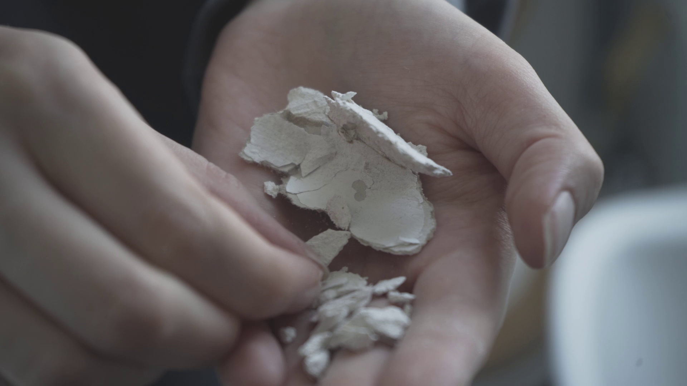
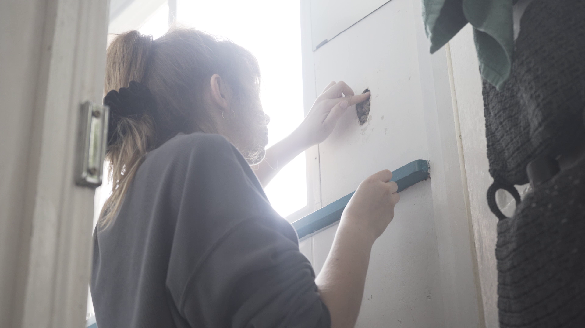
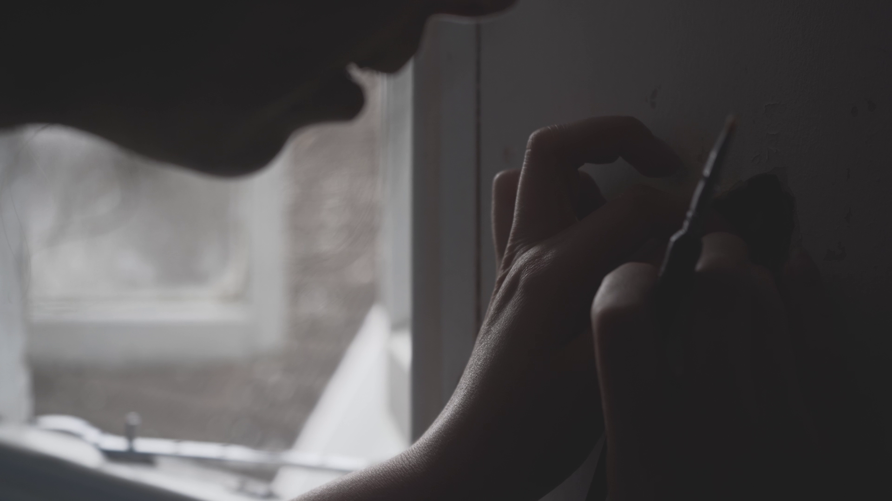
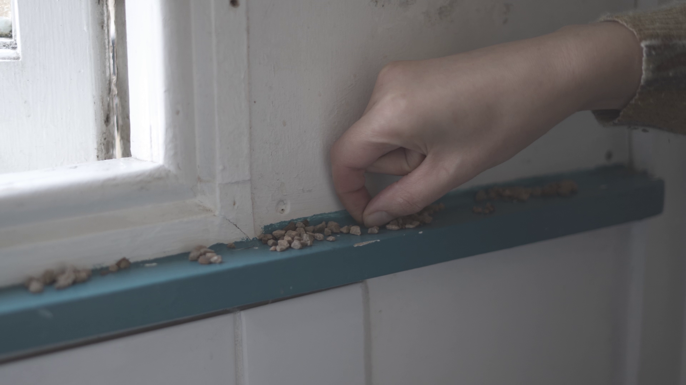

7 minutes · Silent · 2022
A short film conceived and directed by WR Saunders in collaboration with artist Jessica Ostrowicz, who performs her stone-based practice for the camera. A meditation on repair, the passage of time and the integrity of the imperfect, the film considers the stories embedded within the walls of a home.
Presented in Ostrowicz’s solo exhibition Pack Up the Moon, The Steamship PS, London, 2022.
Film concept, direction, cinematography and editing: WR Saunders
Stone practice and performance: Jessica Ostrowicz